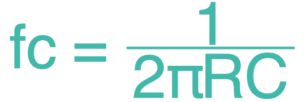
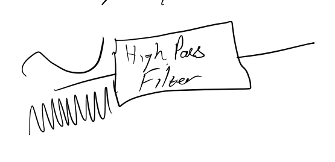
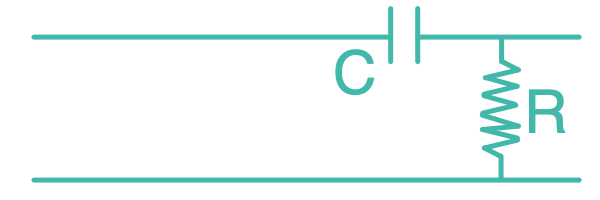
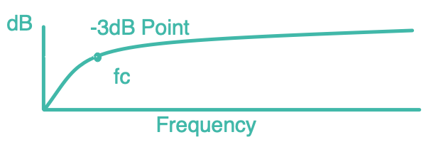

Passive High Pass Filter
HPF Descriptiont Instructions Will Go Here
Passive High Pass Filter
Passive Low Pass Filter
Resistance Value
Resistance Scale
Ω (ohm)
kΩ (kilo-ohm)
mΩ (mega-ohm)
Capacitance Value
Capacitance Scale
F (farads)
mF (millifarads)
μF (microfarads)
nF (nanofarads)
pF (picofarads)
Cutt-off Frequency
Frequency Scale
Hz (hertz)
kHz (kilo-hertz)
mHz (mega-hertz)
Calculate

R = Resistance
C = Capacitance
fc = Cut-off Frequency
  